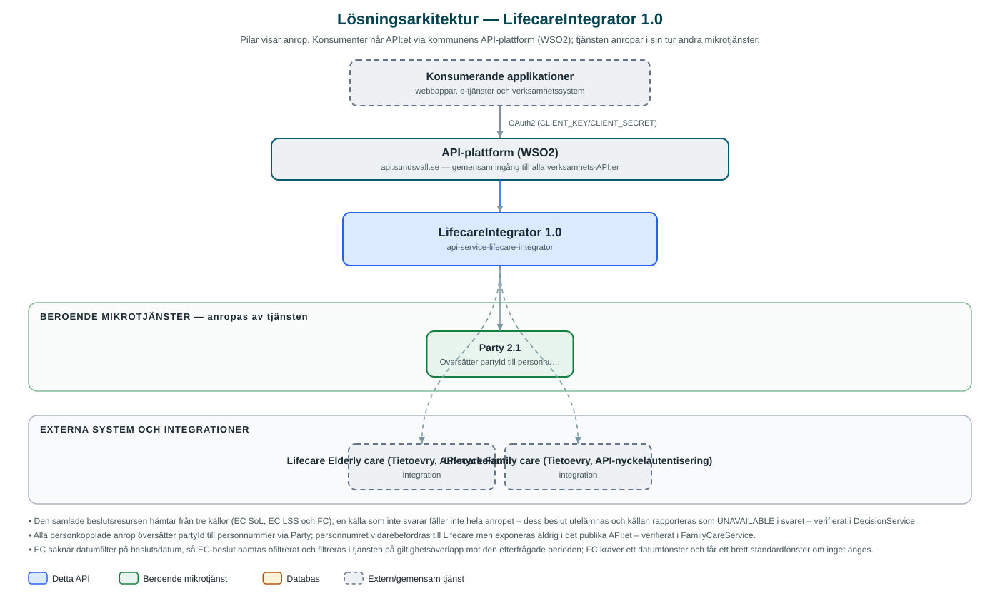

LifecareIntegrator
Läser och skapar socialtjänstinformation i verksamhetssystemet Lifecare – beslut, utredningar, verkställigheter, aktualiseringar och beräkningar – för kommunens applikationer.
Om API:et
Socialtjänstens verksamhetssystem Lifecare (Tietoevry) består av flera delsystem med egna, äldre API:er. LifecareIntegrator kapslar in två av dem – äldreomsorgens Elderly care (EC) och individ- och familjeomsorgens Family care (FC) – bakom ett gemensamt, modernt API så att kommunens applikationer slipper hantera delsystemens olikheter, autentisering och personnummer.
API:et erbjuder en samlad beslutsresurs som hämtar och slår ihop beslut från tre källor: äldreomsorgens SoL- och LSS-beslut samt familjeomsorgens beslut. Därutöver exponeras familjeomsorgens ärendeinformation – utredningar, verkställigheter, resursfördelningar, aktualiseringar (ärendeinflöde), ekonomiska beräkningar, utbetalningar, dokument, insatser, personuppgifter och kontakter.
Personer identifieras genomgående med partyId i det publika API:et. Tjänsten översätter partyId till personnummer via Party-API:et innan Lifecare anropas – personnumret exponeras aldrig utåt.
Det här gör API:et
- Samlade beslut – En gemensam beslutsresurs som hämtar och sammanfogar beslut från äldreomsorgen (SoL och LSS) och familjeomsorgen, sorterade på beslutsdatum.
- Utredningar och verkställigheter – Läser familjeomsorgens utredningar, verkställigheter och resursfördelningar per person.
- Aktualiseringar – Hämtar och skapar aktualiseringar (ärendeinflöde) i familjeomsorgen, inklusive bilagor och förslag.
- Ekonomiska beräkningar – Hämtar och skapar beräkningar (t.ex. för ekonomiskt bistånd) med hushållsmedlemmar, samt läser utbetalningar.
- Person och kontakter – Läser persongrunddata, kontakter, handläggare och insatser ur familjeomsorgen.
- Dokument – Listar dokument och hämtar dokumentinnehåll ur familjeomsorgen.
API-dokumentation
API:ets samtliga resurser, parametrar och datamodeller finns beskrivna i en OpenAPI-specifikation som är hämtad ur källkodsförrådet. Den kan utforskas interaktivt i Swagger UI eller laddas ner som YAML. Programvaruförteckningen (SBOM) listar tjänstens samtliga tredjepartskomponenter med version och licens.
Teknisk dokumentation
Nedan beskrivs hur tjänsten är uppbyggd, vilka andra tjänster den anropar och vad som krävs för att driftsätta den. Informationen är härledd ur källkoden och dess konfiguration på GitHub.
Arkitektur

API:et är en mikrotjänst (Java 25, Spring Boot via kommunens gemensamma tjänsteplattform dept44 (8.0.8), byggd med Maven). Konsumenter når tjänsten via kommunens gemensamma API-plattform (WSO2) på api.sundsvall.se – tjänsten anropas aldrig direkt. Tjänsten anropar i sin tur andra mikrotjänster i kommunens tjänstelandskap. Övriga integrationer som förekommer i koden: Lifecare Elderly care (Tietoevry, API-nyckelautentisering), Lifecare Family care (Tietoevry, API-nyckelautentisering).
Teknikstack
- Språk: Java 25
- Ramverk: Spring Boot via kommunens gemensamma tjänsteplattform dept44 (8.0.8), byggd med Maven
- Övrigt: Feign-klienter genererade ur Lifecares Swagger-specifikationer, Resilience4j (circuit breakers mot EC och FC)
Beroenden till andra mikrotjänster
Tjänsten anropar följande mikrotjänster. Versionerna är hämtade ur källkodens integrationsklienter.
| Tjänst | Version | Användning |
|---|---|---|
| Party | 2.1 | Översätter partyId till personnummer innan Lifecare anropas. |
Programvaruförteckning
Tjänsten bygger på 223 tredjepartskomponenter fördelade på 12 olika licenser. Till skillnad från tabellen ovan, som listar andra mikrotjänster, avses här de programbibliotek som ingår i bygget. Se programvaruförteckningen för hela listan.
Konfiguration och driftsättning
- application.yml med URL, domän och API-nyckel för Lifecare EC respektive FC – nycklarna är hemligheter som sätts per miljö
- OAuth2-klientuppgifter för Party-integrationen
- Ingen databas – tjänsten är en ren integrationsfasad
- Anrop görs per kommun – municipalityId ingår i API-vägarna
Noterbart ur källkoden
- Den samlade beslutsresursen hämtar från tre källor (EC SoL, EC LSS och FC); en källa som inte svarar fäller inte hela anropet – dess beslut utelämnas och källan rapporteras som UNAVAILABLE i svaret – verifierat i DecisionService.
- Alla personkopplade anrop översätter partyId till personnummer via Party; personnumret vidarebefordras till Lifecare men exponeras aldrig i det publika API:et – verifierat i FamilyCareService.
- EC saknar datumfilter på beslutsdatum, så EC-beslut hämtas ofiltrerat och filtreras i tjänsten på giltighetsöverlapp mot den efterfrågade perioden; FC kräver ett datumfönster och får ett brett standardfönster om inget anges.
- Autentiseringen mot Lifecare sker med domän och API-nyckel (X-API-Key), inte OAuth2.
Källkod
Källkoden är öppen och finns hos Sundsvalls kommun på GitHub. I källkodsförrådet finns även instruktioner för att klona, konfigurera och starta tjänsten i egen miljö.